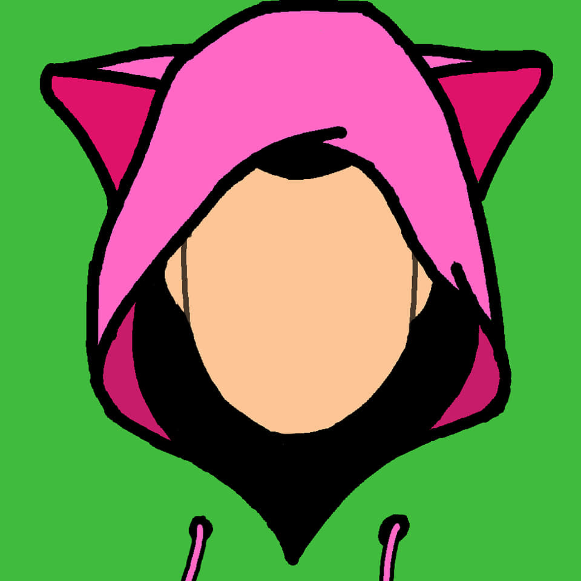

About me
About me
Some info about me and my journey
Me
Hi, My name is Armando Roerdinkveldboom. Im a Game Developer from the Netherlands. I dream of becoming an indie developer working in a small team and making awesome games.
Im also a huge fan of history, specifically japanese culture and arts, i am in a kenjutsu (sword fighting) school and also study japanese and japanese history. I tend to spend my free time making music or skating and traveling
I started off my game dev journey when i discovered game maker 8 about 6 years ago. When i started making a little platformer game it felt really satisfying to have had an idea and actually made it visual and interactive. Even tho i wasnt in a game development school yet, i started to learn to draw, code, model and make music in my free time to prepare for when i could finally go to a real game development school.
MediaCollege Amsterdam
Here i am, in the school of my dreams, being prepared and trained to fulfill my dream of becoming an indie game developer and improving my skills of coding, drawing and making music even more!
I also became i high level competitive gamer in certain games, E.g: Smash bros, League of legends, Street fighter 4 ultra, Tekken and more.